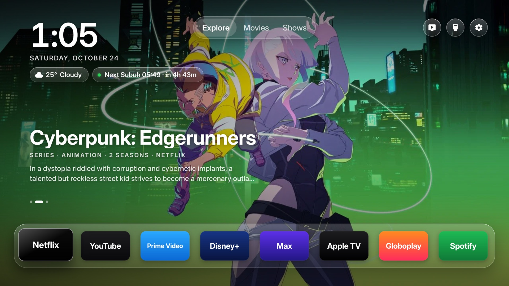

Bahasa Inggeris dahulu · Bahasa Melayu di sebelah
Petang yang senyap, pada televisyen.
Diilhamkan oleh kaca Apple TV yang bersih. Apl anda duduk di atas rak yang jernih. Cuaca satu tekan sahaja, dan di Malaysia waktu solat JAKIM yang seterusnya ada di sebelahnya. Tiada iklan. Tiada baris tajaan. Skrin utama Samsung kekal di tempatnya.

Apa yang ia buat
Kaca, solat, dan jalan pulang.
01
Kaca
Gambar penuh skrin, jam, dan rak apl yang anda benar-benar buka. Gaya Klasik masih ada jika anda mahukannya.
Tiada apa yang dipadam.
02
Solat
Bila zon JAKIM ditetapkan, solat seterusnya dan masa yang tinggal muncul di sebelah cuaca. Widget boleh dimatikan.
03
Mudah dialih
Skrin utama Samsung kekal. Autorun Last App, di bawah Start Screen Options, buat TV hidup ke apl ini. Padam apl ini bila anda mahu ia pergi.
Pada Wi-Fi anda
Lebih kurang sepuluh minit.
TV Samsung dari 2017, Tizen 3 atau lebih baharu. Letak bandar anda dalam config.properties. Kunci TMDB percuma menambah pilihan tajuk. Gambar, bunyi, dan input kekal seperti sedia ada.
- Pada TV, buka Apps dan taip 1 2 3 4 5. Hidupkan Developer mode, tetapkan Host PC IP ke komputer ini, dan mulakan semula.
- Bina dan tandatangan. Pada TV 2023 dan lebih baharu, sijil menggunakan akaun Samsung anda.
git clone https://github.com/mkfadzli/samsung-tv && cd samsung-tv && python3 tizen/build.py --sign <profile> - Pasang. Hidupkan Autorun Last App jika anda mahu TV bangun ke dalamnya.
python3 tizen/install.py 192.168.1.50